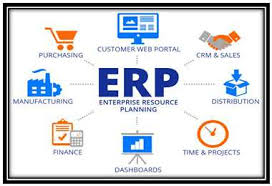

Un lenguaje marcado o lenguaje de marcas es una forma de codificar un documento que, junto con el texto, incorpora etiquetas o marcas que contienen información adicional acerca de la estructura del contenido o su presentación.
El lenguaje de marcas más extendido es el HTML (HyperText Markup Language, lenguaje de marcado de hipertexto)
Los lenguajes de marcado no tiene funciones aritméticas o variables, como poseen los lenguajes de programación.
Históricamente, el marcado se usaba y se usa en la industria editorial y de la comunicación, así como entre autores, editores e impresores.
Gestión de la Información. Proceso mediatizado por un conjunto de actividades que permiten la obtención de información, lo más pertinente, relevante y económica posible, para ser usada en el desarrollo y el éxito de una organización. Genera nuevos conocimientos.
Gestionar información es: ir en busca de nuevos significados, análisis, aplicar el principio de que el todo, es más que la suma de las partes. Es producir un impacto en el ambiente de cualquier organización.
Es un proceso que debe estar presente en cada uno de los pasos de la organización, es un proceso y a la vez un subproceso. Requiere acción, decisión y evaluación.
Mediante la gestión se proporcionan los recursos de información necesarios para una buena toma de decisiones, se desarrollan nuevos conocimientos que posibilitan calidad y eficiencia en los servicios y productos de las organizaciones.
Los sistemas de planificación de recursos empresariales (ERP, por sus siglas en inglés, enterprise resource planning) son los sistemas de información que integran y manejan muchos de los negocios asociados con las operaciones de producción y distribución de una compañía.
Los sistemas ERP típicamente manejan la producción, logística, distribución, inventario, envíos, facturas y contabilidad de la compañía de forma modular. Sin embargo, la planificación de recursos empresariales o el software ERP puede intervenir en el control de muchas actividades de negocios como ventas, entregas, pagos, producción, administración de inventarios, calidad de administración y la administración de recursos humanos.
Los sistemas ERP son llamados ocasionalmente back office (trastienda) ya que indican que el cliente y el público general no tienen acceso a él; asimismo, es un sistema que trata directamente con los proveedores. Posteriormente, el software ERP fue ocupando todos los espacios de la organización, absorbiendo las funciones del CRM. (Administración basada en la relación con los clientes)
Los ERP funcionaban ampliamente en las empresas. Entre sus módulos más comunes se encuentran el de manufactura o producción, almacenamiento, logística e información tecnológica, incluyen además la contabilidad, y suelen incluir un sistema de administración de recursos humanos, y herramientas de mercadotecnia y administración estratégica.